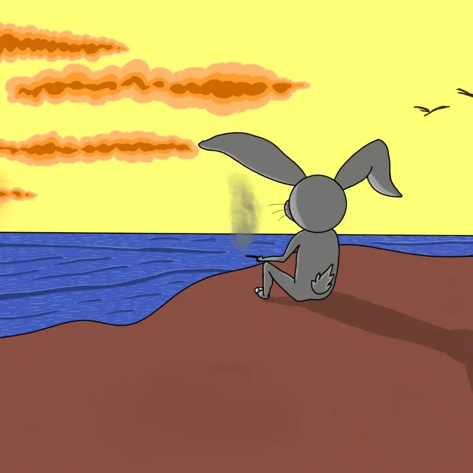
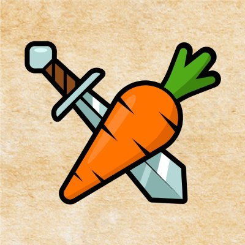
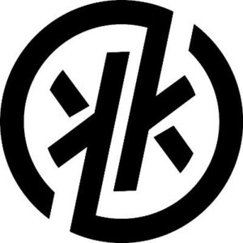

Recovered canon · what the game was
A world built to run without us
Somewhere around the play-to-earn boom, a small team shipped a game at rabbit.game. It was an idle game — the kind you check twice a day — where every rabbit was a unique, ownable character sent into dungeons to dig up a currency called $CARROT.
"The Rabbit Project is an idle game with built-in chat and trade system, where players control unique NFT characters to explore dungeons, collect $CARROT and engage in various activities to enhance their characters and clans."
The goal was to build a powerful clan: level your rabbits, run clan activities, and optimize dungeon clears to maximize $CARROT. Rabbits came home from raids injured and had to be patched up before going back down. Gems came up out of the World Map and went into the Blacksmith's forge.
"Players can purchase unique rabbits with varying traits, such as colors and patterns, and breed them to create new and rare rabbits… with players able to participate in rabbit races and other challenges to earn rewards."
The rabbits were bred with unique traits — colors, patterns — and raced each other in challenges. It lived in the browser, on the Sei blockchain (the game's Twitter was @RabbitsOnSei), with a token CoinGecko indexed as the-rabbit-project.
Then, the way these things go, the players drifted off. The domains lapsed. The documentation survives only as fragments in search-engine indexes — which is where this canon was recovered from. The premise of the show is the part nobody wrote down: the world was designed to keep idling whether anyone watched or not.
Recovered canon · the five locations
The world map is the set list
Every location below is documented, original game canon. Each one maps directly onto a standing set for the series.
The Hospital
Fix up your injured rabbits by paying with $CARROT.
The Arena
Let your rabbits battle it out with other clans.
The Main Building
Arrange and set up your clans here.
The Blacksmith
Craft and upgrade items using $CARROT and types of gems.
The World Map
Send rabbits on raids to earn $CARROT and gems.
The revival · series treatment
The show: what happens to a world when everyone logs off?
When the last player stops logging in, a young raid-runner discovers the truth her clan was built to never ask — the carrots don't go anywhere anymore — and leads a working world of rabbits to the edge of its own map to find out who it was all for.
Format: half-hour animated series. Warm, painterly, lantern-lit underground world; the tone sits between Wreck-It Ralph's inside-the-game logic and Watership Down's earnest stakes — comedy on the surface, quiet existential engine underneath.
Every mechanic of the original game becomes lived-in culture: the injury system is the Hospital's endless night shift, the clan system is politics and family, $CARROT is wage and religion at once, and the "idle loop" is the show's central question — the rabbits work whether anyone is watching or not. It's a workplace comedy that slowly reveals itself as a story about purpose after abandonment.
The clan
Wick
Fastest dungeon-clearer in the clan, obsessed with optimizing $CARROT yield — until she notices the counters have stopped counting for anyone. The first rabbit to say "no one is watching" out loud.
Gauze
Runs the Hospital and its ledger of injuries. Charges $CARROT because the rules say so; treats everyone anyway. Keeps a private list of rabbits who never came back from the World Map.
Mater
Old forge-rabbit who hoards gems by type and swears the players will return. Remembers "the Days of Login" like a golden age. The revival's biggest skeptic — and its deepest believer.
Brindle
Undefeated in inter-clan battle, performing nightly to an arena of empty seats. Refuses to admit the crowds are gone. His slow acceptance is the show's most human arc — in a rabbit.
The Warren-Mother
Arranges the clans from the Main Building the way she always has. Knows more about the vanished players than she lets on — she was the first rabbit ever minted.
The Loop
The idle system itself: quotas, timers, respawning dungeons. It isn't evil — it's just still running. The question of season one is whether to keep feeding it, break it, or learn to own it.
Season one — "Idle"
- E01Daily QuotaA perfect day in the warren, told entirely through the grind — raids out, carrots in, injuries healed. Only in the final shot do we see the empty player thrones above.
- E02Two InjuredWick's raid party comes back hurt and the Hospital bill doesn't add up: the $CARROT they pay never leaves the vault. Gauze shows her the ledger. Nothing leaves. Nothing has left for a long time.
- E03The Days of LoginMater's forge-tale of the golden age — told as legend, seen by us as flashback: chat windows blazing, trades flying, thousands of names online. The gap between his myth and the truth.
- E04House FullBrindle's arena special. The clans stage the greatest battle in warren history to "bring the watchers back." A ratings-night episode where the rating is zero.
- E05The Warren-Mother's KeyWick confronts the first-minted rabbit, who reveals what she's guarded since the beginning: the way the world was made — and the door in the Main Building nobody has clearance to open.
- E06Edge of the MapSeason finale. Wick leads a raid past the last dungeon to the border of the World Map, where the render stops. The clan votes: keep the loop, or cross it. They cross.
The partner · a living warren
The Rabbit's Club: the community that could tell this story
The Rabbit Project's world is recovered, but its community is gone. There is, however, a living one: The Rabbit's Club — a collection of 2,250 hand-drawn rabbits on Ethereum (launched May 31, 2024, featured by the NFT Design Awards), whose whole identity is folklore: the origins, lifestyles, and legends of rabbits across cultures worldwide.
Crucially, they already tell stories the way a writers' room does: holders interact with the Storyteller, a narrator figure who develops the collection's lore with the community — theories, discussions, canon built in public. That is exactly the machinery a revived Rabbit Project needs.
The crossover conceit writes itself: the legend of the abandoned warren — a world of working rabbits whose gods stopped watching — becomes a tale the Storyteller tells. Their folklore frames our world; the show opens in their voice.

Art & audience
2,250 hand-drawn characters, an award-listed visual identity, and a community trained to co-write lore with the Storyteller.
World & premise
A recovered world with real mechanics-as-culture — clans, raids, $CARROT, the Hospital's night shift — and a series treatment with a hook: everyone logged off.
Co-development
Storyteller as the show's narrator and framing device; Club holders as founding community; character cameos from the collection; co-owned story bible.
The archive · what survived
Everything that's left, in one place
This revival is built on the recoverable record. The original domains are dead, but complete saved copies of both surviving listings — artwork included — are preserved in this repo's archive/ folder, and the game's documentation survives in search-engine indexes. The full dossier lives in research/RESEARCH.md.


| Source | What it holds | Status |
|---|---|---|
| rabbit.game | The original game site | domain dead |
| gitbook.rabbit.game | Official docs — source of the location & economy canon | domain dead · index fragments only |
| chainplay.gg | "NFT Game Stats" listing — genre, platform, banner art, links | saved in archive/ |
| cryptogames.gg | Review — breeding & racing canon, token, logo art | saved in archive/ |
| @RabbitsOnSei | The game's Twitter/X — names its chain: Sei | dormant |
| CoinGecko | Token indexed as the-rabbit-project | delisted / no data |
| Wayback Machine | Possible snapshots of the game site & docs | to be checked |
The original artwork — banner, emblem, and marks — was recovered from saved copies of the two listings and lives in assets/. It defines the revival's look: parchment, ink outlines, patched cloaks, and a carrot crossed with a sword.
The plan · from ruin to renewal
Revival roadmap
- Deep archive digBoth listings are already preserved in archive/ with the original art. Still open: Wayback snapshots of rabbit.game and the GitBook, the @RabbitsOnSei timeline, and community history.
- Story bibleExpand this treatment into a full bible: world rules inherited from the game's mechanics, clan cultures, the theology of $CARROT, the truth behind the vanished players.
- Original visual identityCharacter designs and world art for the five locations — original work, unencumbered by the dead project's rights.
- Pilot script — "Daily Quota"Write E01: one perfect day of the grind, and the reveal that no one is watching.
- Pitch packageThis site, the bible, the pilot, and a two-minute animated proof-of-concept teaser.
- Partner outreach — The Rabbit's ClubPitch @TheRabbit_Club on co-developing the show: their Storyteller and hand-drawn cast, our recovered world and treatment.